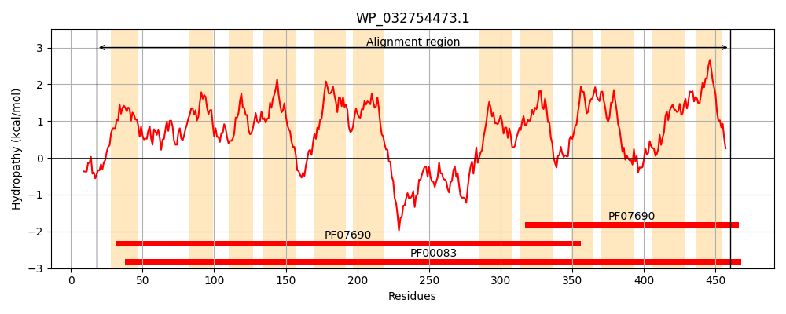
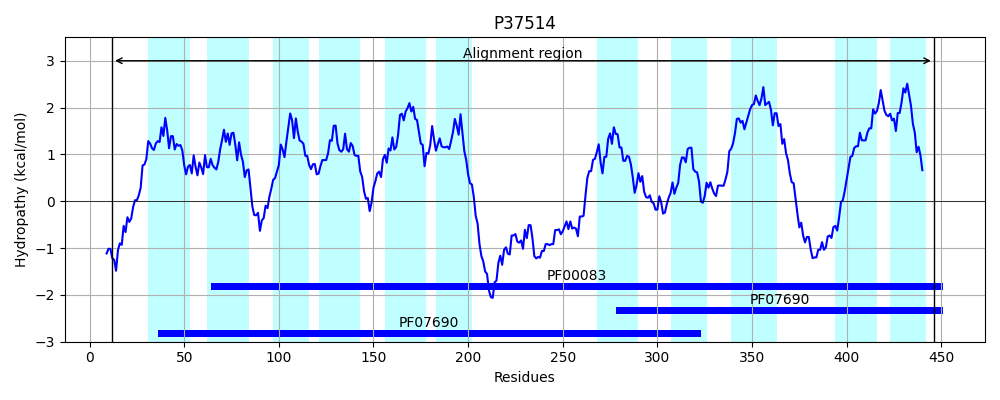
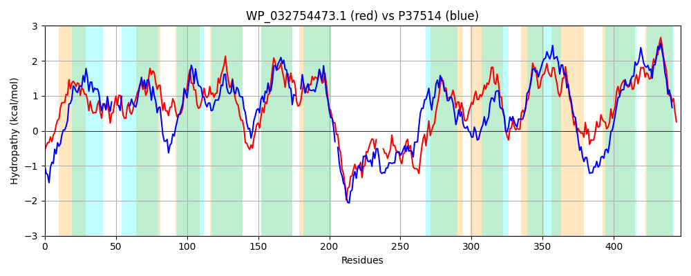

Hit Accession: P37514
Hit TCID: 2.A.1.1.113
Hit Description: gnl|BL_ORD_ID|10104 gnl|TC-DB|P37514|2.A.1.1.113 Putative metabolite transport protein yyaJ OS=Bacillus subtilis (strain 168) GN=yyaJ PE=3 SV=2
Mach Len: 447
e:0.000000
Query TMS Count : 12
Hit TMS Count: 11
TMS-Overlap Score: 8.050000
Predicted Substrates:CHEBI:25212;metabolite
BLAST Alignment:
Score: 568 , Bit scores: 223 bits, E-value: 8.1e-68, Alignment length: 447, Percentage identity: 30
Query: 18 PHASLTGRIDALPASFGLWSFITLLSLGGFFELYDLFQTGYISAGLLADGIFHTGQAGIFGIADQAAFASATFMGLFIGASLLAPLADRLGRRLTFMVALAWYGLFSLLMATQSSAEGVIFFRFLVGIGLGIELVTIDTYLSEWMPTHLRNKAFAFAFFIQFLSVPAVALMSWMLVPTTLFGLSGWRWVIIFGALFSLAIWFIRKKLPESARWLESKGRHDDAHAVMSEMEARC----GLTPSPKHAHAAQSVVKRGTFREIWAPQYRQRTLMLMVMNFFQAIGFFGFGNWLPALLSGQGASITHSLLYAFFITLAYPLGCLFCTRFVHRFENKWQIVLSALMTVIFGTLFALQNSPILLVICGFMITWSNAWLTISYHAYQAEVFPTHIRARAVGFCYSFSRLSTAVTSILIGIILQYAGTPGVISFIVVSMLMVMLSVGIFGPRT 460
P ++ R+D LP S + +T L + FF+L DLF ++ L+ H G ++ A +A+F+G+F+GASL L+DR+GR+ + + + + SL A ++ FRFL G G+ +V ++YL+E+ P+ +R K +F I + VP ++S ++P G GWR V ++GA+ + +FI + L ES RW E++G + A A+++ +E + G P+ +++V + + + + + T++L + F+ GF+GF +W+P+LL G ++ ++L Y ++ PLG L + RF+ KW + SA +T I G L+ + PI++++ GF++ + T + +AY +E +PT R+ G Y R S S+L+G I G V FI L L + FGP T
Sbjct: 12 PFSNAANRLDRLPISRVHFQVLTALGIVYFFDLADLFTLSNVAPALIE----HWG----IPLSTIANVTAASFLGMFLGASLGGRLSDRIGRKKALNLFVFVFSIASLCNAAAWDIPSLMTFRFLTGFGVAAAMVITNSYLAEFFPSSVRGKYISFCAMIGLIGVPITNIVSAFVIP---LGSWGWRLVFVWGAVGLIYFFFIHR-LEESPRWHENRGEYAKADAILTRIEEQVEKEKGPLPAASQPKVSETVKQNAGYAGLLKGRNLKITIVLSAVWIFETFGFYGFASWVPSLLKSNGVTMENTLWYNVLHSVGAPLGALLGSMISERFQRKWILAASAFLTAIAGLLYGMTFIPIMIIVFGFIVNITERVFTSNLYAYTSEPYPTEYRSSGSGLAYGLGRFSNIFGSLLVGFIAVQLGYISVFLFIGGCWLACSLLLIFFGPNT 446 | Protein Hydropathy Plots: |
|---|
|  |  |
Pairwise Alignment-Hydropathy Plot:
|
|---|
|  |